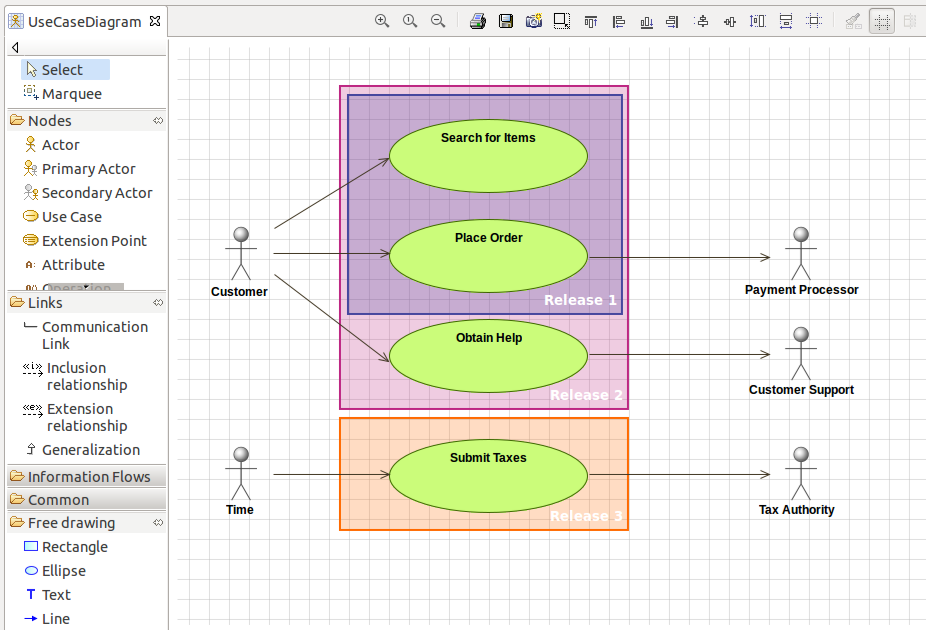
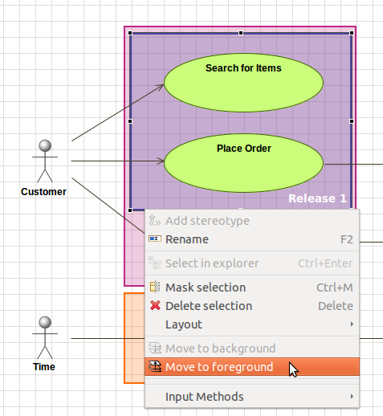

Modelio 3.1 introduces a new free drawing feature to let you add pure-graphical information in your diagrams.

Use the diagram palette to add one of the available free drawing elements:
Rectangles
Select “Rectangle” in the palette, then click in the diagram background, draw a rectangle, and release the mouse button to validate the rectangle. Note: you can draw a perfect square by holding down the SHIFT key while drawing a rectangle.
Ellipses
Select “Ellipse” in the palette, then click in the diagram background, draw an ellipse, and release the mouse button to validate the ellipse. Note: you can draw a perfect circle by holding down the SHIFT key while drawing an ellipse.
Text
Select “Text” in the palette, then click in the diagram background to create a new text field.
Lines (arrows)
Select “Line” in the palette, click in the diagram background where you want the arrow to start (Line source), then click again where you want the arrow to stop (Line target). You can draw simple lines, one-direction arrows, or bi-directional arrows. Use the Symbol view to customize your lines.
All the free drawing elements can be modified in the Symbol view (color, line width, background, font, line end, etc.)
Free drawing elements can be moved to background or foreground:

Steps: